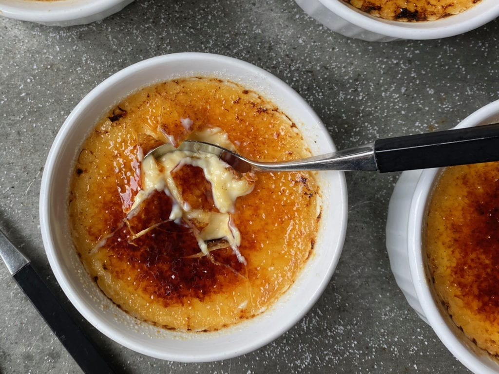

Bless Alton Brown. Need I say more? Okay, yes, maybe I do. To keep it short, Alton Brown (AB for short) was a huge part of my childhood and probably is the reason why I became so fascinated by cooking. Some kids watched Saturday morning cartoons... I watched AB. I thought his lame science-y jokes were so funny, and the way he talked about food was so different and much more realistic than other Food Network stars. Anyway, enough about my fascination with AB. Onto the recipe!
Creme Brulee is now my family favorite. It is the dessert my parents fawn over and always request that I make. Actually it isn't just my family, my friends love it too! The simplicity of this recipe as well as how fast I can churn it out is what makes it appealing. Over the years I have tinkered with the different flavor options available out there. I have tried taro, I have tried matcha, I have tried thai tea. I actually have not tried coffee yet... maybe that will be my next endeavor. Anyway, this recipe comes together in under 20 minutes, and spends 45 minutes in the oven, and then sits in the fridge over night. You sprinkle some sugar on it, torch it up, and Voila!, you got delicious Creme Brulee that is certain to impress.
*The amount of hot water in the ingredients is arbitrary, it just depends on the size of the roasting pan
**Tempering is slowly incorporating a hot liquid into eggs to slowly raise the temperature and to avoid curdling/cooking the eggs. Once about half of the cream mixture is incorporated into the eggs, you can pour the rest of the cream in without worry. If you are worried, feel free to use a wire mesh strainer before pouring in ramekens.